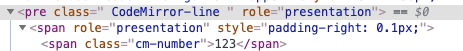
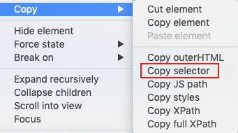

本书作者：测试开发刚哥，文章版权归个人所有，未经授权请勿转载。
这两天要在阿里云日志中操作UI，以输入关键字搜索日志。
在send_keys时报错element not interactable。
iframe
第一个问题是iframe，通过切换iframe解决：
driver.switch_to.frame(0) # 索引从0开始
span
第二个问题是span。
F12查看html长这样：

①find_element(pre).click 有效，说明iframe切换成功了
②find_element(span2).send_keys报错
element not interactable
span不支持send_keys。
第一个方法，通过调js来解决，设置span的innerText
search_text = 'error'
log_search_span = driver.find_element_by_xpath(
'//*[@id="queryEl"]/div[2]/div/div[6]/div[1]/div/div/div/div[5]/div/pre')
js = 'arguments[0].innerText=arguments[1];'
driver.execute_script(js, log_search_span, search_text)
第二个方法，添加属性contenteditable
search_text = 'error'
log_search_span = driver.find_element_by_xpath(
'//*[@id="queryEl"]/div[2]/div/div[6]/div[1]/div/div/div/div[5]/div/pre')
js = 'arguments[0].setAttribute("contenteditable", "true");'
driver.execute_script(js, log_search_span)
log_search_span.send_keys(search_text) # 可编辑后send_keys成功
不简单
虽然值设置成功了，但是不能用，在查询时，还是用空值在查询。
经过分析，得出以下线索：
- 设置的元素值是已经生成后的dom
- 程序真正的dom隐藏在js/后端中
- span是由js或后端动态生成的
- 要想模拟出来，需要分析js实现代码
- 控制台的js代码是加密混淆过的
- selenium的send_keys已经是模拟键盘输入了，不知道为啥没有触发相关代码，存值到dom
网上很多的方案是<input>标签，比较好解决，阿里的这个span还真有点不简单。
chrome console调试js
最后分享一下chrome console调试js的方法。
F12后，在元素上右键，选择Copy selector，复制selector

切换到console，输入即可定位到该元素：
document.querySelector('#queryEl > div.react-codemirror2 > div > div.CodeMirror-scroll > div.CodeMirror-sizer > div > div > div > div.CodeMirror-code > div > pre > span > span').innerText;